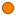
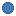

<!doctype html>
<html lang="en">
    <head>
        <meta charset="utf-8">
        <meta http-equiv="X-UA-Compatible" content="IE=edge">
        <meta name="viewport" content="initial-scale=1,user-scalable=no,maximum-scale=1,width=device-width">
        <meta name="mobile-web-app-capable" content="yes">
        <meta name="apple-mobile-web-app-capable" content="yes">
        <link rel="stylesheet" href="css/leaflet.css">
        <link rel="stylesheet" href="css/qgis2web.css"><link rel="stylesheet" href="css/fontawesome-all.min.css">
        <link rel="stylesheet" href="css/MarkerCluster.css">
        <link rel="stylesheet" href="css/MarkerCluster.Default.css">
        <style>
        html, body, #map {
            width: 100%;
            height: 100%;
            padding: 0;
            margin: 0;
        }
        </style>
        <title></title>
    </head>
    <body>
        <div id="map">
        </div>
        <script src="js/qgis2web_expressions.js"></script>
        <script src="js/leaflet.js"></script>
        <script src="js/leaflet.rotatedMarker.js"></script>
        <script src="js/leaflet.pattern.js"></script>
        <script src="js/leaflet-hash.js"></script>
        <script src="js/Autolinker.min.js"></script>
        <script src="js/rbush.min.js"></script>
        <script src="js/labelgun.min.js"></script>
        <script src="js/labels.js"></script>
        <script src="js/leaflet.markercluster.js"></script>
        <script src="data/1000_lakes_2019_qgis_1.js"></script>
        <script src="data/selection_100_lakes_2019_qgis_2.js"></script>
        <script>
        var map = L.map('map', {
            zoomControl:true, maxZoom:28, minZoom:1
        }).fitBounds([[57.20576278612602,1.9295693691492457],[64.04623072727202,20.933745386165977]]);
        var hash = new L.Hash(map);
        map.attributionControl.setPrefix('<a href="https://github.com/tomchadwin/qgis2web" target="_blank">qgis2web</a> &middot; <a href="http://leafletjs.com" title="A JS library for interactive maps">Leaflet</a>');
        var bounds_group = new L.featureGroup([]);
        function setBounds() {
        }
        var layer_OpenStreetMap_0 = L.tileLayer('http://a.tile.openstreetmap.org/{z}/{x}/{y}.png', {
            opacity: 1.0,
            attribution: '',
        });
        layer_OpenStreetMap_0;
        map.addLayer(layer_OpenStreetMap_0);
        function pop_1000_lakes_2019_qgis_1(feature, layer) {
            var popupContent = '<table>\
                    <tr>\
                        <th scope="row">station_id</th>\
                        <td>' + (feature.properties['station_id'] !== null ? Autolinker.link(String(feature.properties['station_id'])) : '') + '</td>\
                    </tr>\
                    <tr>\
                        <th scope="row">lake_name</th>\
                        <td>' + (feature.properties['lake_name'] !== null ? Autolinker.link(String(feature.properties['lake_name'])) : '') + '</td>\
                    </tr>\
                    <tr>\
                        <th scope="row">komm</th>\
                        <td>' + (feature.properties['komm'] !== null ? Autolinker.link(String(feature.properties['komm'])) : '') + '</td>\
                    </tr>\
                    <tr>\
                        <th scope="row">fylke</th>\
                        <td>' + (feature.properties['fylke'] !== null ? Autolinker.link(String(feature.properties['fylke'])) : '') + '</td>\
                    </tr>\
                    <tr>\
                        <th scope="row">nve_vatn_nr</th>\
                        <td>' + (feature.properties['nve_vatn_nr'] !== null ? Autolinker.link(String(feature.properties['nve_vatn_nr'])) : '') + '</td>\
                    </tr>\
                    <tr>\
                        <th scope="row">utm_e</th>\
                        <td>' + (feature.properties['utm_e'] !== null ? Autolinker.link(String(feature.properties['utm_e'])) : '') + '</td>\
                    </tr>\
                    <tr>\
                        <th scope="row">utm_n</th>\
                        <td>' + (feature.properties['utm_n'] !== null ? Autolinker.link(String(feature.properties['utm_n'])) : '') + '</td>\
                    </tr>\
                    <tr>\
                        <th scope="row">lake_area_km2</th>\
                        <td>' + (feature.properties['lake_area_km2'] !== null ? Autolinker.link(String(feature.properties['lake_area_km2'])) : '') + '</td>\
                    </tr>\
                    <tr>\
                        <th scope="row">altitude_m</th>\
                        <td>' + (feature.properties['altitude_m'] !== null ? Autolinker.link(String(feature.properties['altitude_m'])) : '') + '</td>\
                    </tr>\
                </table>';
            layer.bindPopup(popupContent, {maxHeight: 400});
        }

        function style_1000_lakes_2019_qgis_1_0() {
            return {
                pane: 'pane_1000_lakes_2019_qgis_1',
                radius: 6.000000000000002,
                opacity: 1,
                color: 'rgba(50,87,128,1.0)',
                dashArray: '',
                lineCap: 'butt',
                lineJoin: 'miter',
                weight: 1,
                fill: true,
                fillOpacity: 1,
                fillColor: 'rgba(72,123,182,1.0)',
            }
        }
        map.createPane('pane_1000_lakes_2019_qgis_1');
        map.getPane('pane_1000_lakes_2019_qgis_1').style.zIndex = 401;
        map.getPane('pane_1000_lakes_2019_qgis_1').style['mix-blend-mode'] = 'normal';
        var layer_1000_lakes_2019_qgis_1 = new L.geoJson(json_1000_lakes_2019_qgis_1, {
            attribution: '',
            pane: 'pane_1000_lakes_2019_qgis_1',
            onEachFeature: pop_1000_lakes_2019_qgis_1,
            pointToLayer: function (feature, latlng) {
                var context = {
                    feature: feature,
                    variables: {}
                };
                return L.circleMarker(latlng, style_1000_lakes_2019_qgis_1_0(feature));
            },
        });
        var cluster_1000_lakes_2019_qgis_1 = new L.MarkerClusterGroup({showCoverageOnHover: false,
            spiderfyDistanceMultiplier: 2});
        cluster_1000_lakes_2019_qgis_1.addLayer(layer_1000_lakes_2019_qgis_1);

        bounds_group.addLayer(layer_1000_lakes_2019_qgis_1);
        function pop_selection_100_lakes_2019_qgis_2(feature, layer) {
            var popupContent = '<table>\
                    <tr>\
                        <th scope="row">station_id</th>\
                        <td>' + (feature.properties['station_id'] !== null ? Autolinker.link(String(feature.properties['station_id'])) : '') + '</td>\
                    </tr>\
                    <tr>\
                        <th scope="row">lake_name</th>\
                        <td>' + (feature.properties['lake_name'] !== null ? Autolinker.link(String(feature.properties['lake_name'])) : '') + '</td>\
                    </tr>\
                    <tr>\
                        <th scope="row">komm</th>\
                        <td>' + (feature.properties['komm'] !== null ? Autolinker.link(String(feature.properties['komm'])) : '') + '</td>\
                    </tr>\
                    <tr>\
                        <th scope="row">fylke</th>\
                        <td>' + (feature.properties['fylke'] !== null ? Autolinker.link(String(feature.properties['fylke'])) : '') + '</td>\
                    </tr>\
                    <tr>\
                        <th scope="row">nve_vatn_nr</th>\
                        <td>' + (feature.properties['nve_vatn_nr'] !== null ? Autolinker.link(String(feature.properties['nve_vatn_nr'])) : '') + '</td>\
                    </tr>\
                    <tr>\
                        <th scope="row">lake_area_km2</th>\
                        <td>' + (feature.properties['lake_area_km2'] !== null ? Autolinker.link(String(feature.properties['lake_area_km2'])) : '') + '</td>\
                    </tr>\
                    <tr>\
                        <th scope="row">altitude_m</th>\
                        <td>' + (feature.properties['altitude_m'] !== null ? Autolinker.link(String(feature.properties['altitude_m'])) : '') + '</td>\
                    </tr>\
                </table>';
            layer.bindPopup(popupContent, {maxHeight: 400});
        }

        function style_selection_100_lakes_2019_qgis_2_0() {
            return {
                pane: 'pane_selection_100_lakes_2019_qgis_2',
                radius: 6.000000000000001,
                opacity: 1,
                color: 'rgba(154,74,0,1.0)',
                dashArray: '',
                lineCap: 'butt',
                lineJoin: 'miter',
                weight: 1,
                fill: true,
                fillOpacity: 1,
                fillColor: 'rgba(255,127,0,1.0)',
            }
        }
        map.createPane('pane_selection_100_lakes_2019_qgis_2');
        map.getPane('pane_selection_100_lakes_2019_qgis_2').style.zIndex = 402;
        map.getPane('pane_selection_100_lakes_2019_qgis_2').style['mix-blend-mode'] = 'normal';
        var layer_selection_100_lakes_2019_qgis_2 = new L.geoJson(json_selection_100_lakes_2019_qgis_2, {
            attribution: '',
            pane: 'pane_selection_100_lakes_2019_qgis_2',
            onEachFeature: pop_selection_100_lakes_2019_qgis_2,
            pointToLayer: function (feature, latlng) {
                var context = {
                    feature: feature,
                    variables: {}
                };
                return L.circleMarker(latlng, style_selection_100_lakes_2019_qgis_2_0(feature));
            },
        });
        var cluster_selection_100_lakes_2019_qgis_2 = new L.MarkerClusterGroup({showCoverageOnHover: false,
            spiderfyDistanceMultiplier: 2});
        cluster_selection_100_lakes_2019_qgis_2.addLayer(layer_selection_100_lakes_2019_qgis_2);

        bounds_group.addLayer(layer_selection_100_lakes_2019_qgis_2);
        cluster_selection_100_lakes_2019_qgis_2.addTo(map);
        var baseMaps = {};
        L.control.layers(baseMaps,{' selection_100_lakes_2019_qgis': cluster_selection_100_lakes_2019_qgis_2,' 1000_lakes_2019_qgis': cluster_1000_lakes_2019_qgis_1,"OpenStreetMap": layer_OpenStreetMap_0,},{collapsed:false}).addTo(map);
        setBounds();
        </script>
    </body>
</html>
